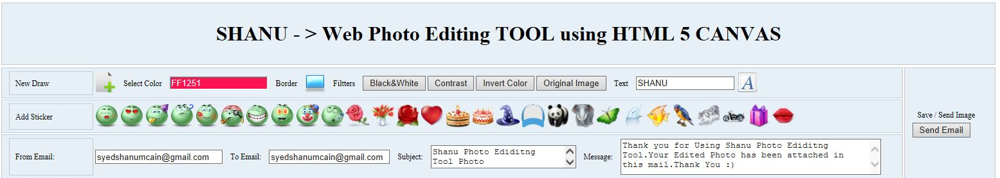
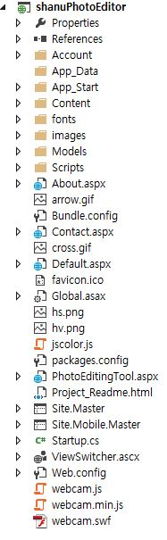
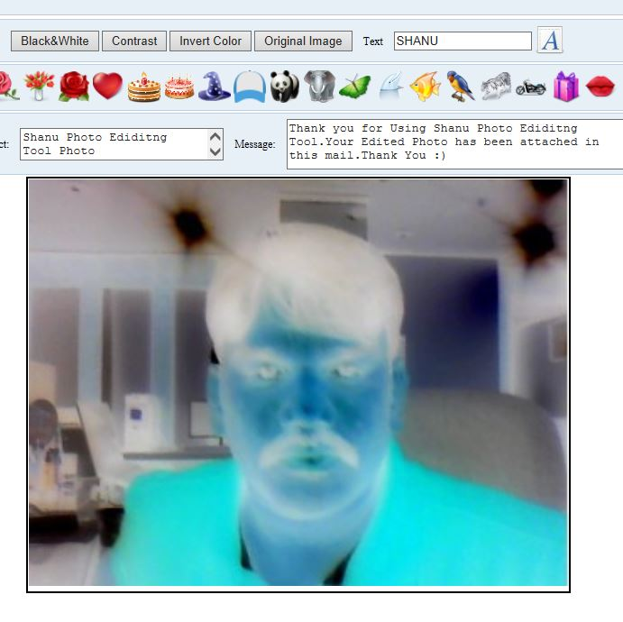
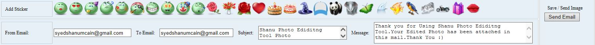
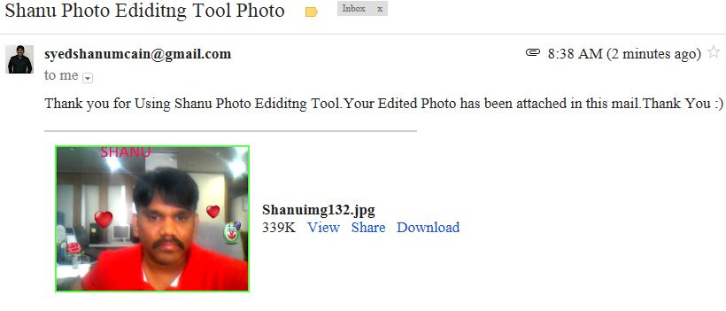

ASP.Net Web Photo Editing Tool Using HTML 5
Introduction

In
my previous article “Web
Painting Tool Using HTML 5 CANVAS in ASP.NET"
I explained how to create a simple Web Painting tool using HTML5 and jQuery. This article explains how to create a simple web-based photo editing tool using HTML5, jQuery and ASP.NET.
This article shows the details of how to do the following.
This article shows the details of how to do the following.

- Capture an image from a web camera (I used Webcam JS, you can download the script file from thislink).
Webcam JS is a JavaScript library for capturing images from a web camera and saving them as JPEG/PNG or any data URI format.
I used this library to capture images from the web camera and display the captured image in the HTML 5 canvas for editing the photo, adding a smiley, text and send the final edited image by email.
- Add Sticker: Add stickers, for example lSmiley's, flowers, and so on to our captured photo.
- Add Border: Add a border to the captured photo.
- Add Text: Add text to the captured photo.
- Add Filters: Add filters to the captured photo, such as adding contrast, changing it to a Black & White photo, invert the color of the photo or convert to an original captured photo.
- Save and Send to Email: The final edited photo can be saved to the application root folder and you can send the edited photo to an Email address.
- 7. Post Canvas Photo to Facebook. The Final Edited photo can be posted to Facebook.
Building the Sample
Prerequisites
Visual Studio 2013 or Visual Studio 2010.
In the source code Zip file you can find both Visual Studio 2010 and Visual Studio 2013 Solutions. You can use any solution depending on your Visual Studio version.
WEB Camera (to capture your photo to edit and send to email).
Visual Studio 2013 or Visual Studio 2010.
In the source code Zip file you can find both Visual Studio 2010 and Visual Studio 2013 Solutions. You can use any solution depending on your Visual Studio version.
WEB Camera (to capture your photo to edit and send to email).
Description
The main purpose
is to make the program very simple and easy to use. All the functions have been well commented in the project. I have attached my sample program to this article for more details. Here we will see the procedure to create a photo editing tool using a HTML5 canvas.
HTML5: HTML5 is the new version of HTML. HTML5 has cross-platform support. That means that HTML5 can work in a PC, Tablet and a Smartphone. HTML5 should be started with a DOCTYPE, for example:
HTML5: HTML5 is the new version of HTML. HTML5 has cross-platform support. That means that HTML5 can work in a PC, Tablet and a Smartphone. HTML5 should be started with a DOCTYPE, for example:
HTML
Edit|Remove
html
<!DOCTYPE html> <html> <body></body> </html>
<!DOCTYPE html> <html> <body></body> </html>
Som
of the new features in HTML5 are CANVAS, AUDIO, VIDEO and so on.
CANVAS
CANVAS is the element for 2D drawings using JavaScript. The Canvas has methods such as drawing paths, rectangles, arcs, text and so on.
The Canvas element looks as in the following.
CANVAS
CANVAS is the element for 2D drawings using JavaScript. The Canvas has methods such as drawing paths, rectangles, arcs, text and so on.
The Canvas element looks as in the following.
HTML
Edit|Remove
html
<canvas id="canvas" width="400" height="400"></canvas>
<canvas id="canvas" width="400" height="400"></canvas>
The Canvas is nothing but a container for creating graphics. To create 2D graphics we need to use JavaScript. We will see the details here in the code.
Step 1
Add References: Add an entire JavaScript library to your project to use the webcam capture. For webcam capture we need webcam.js, webcam.min.js and webcam.swf. You can download these files from here.

Step
2
To add the Webcam: Add the following code to initialize the web camera in your browser and display the web camera image.
To add the Webcam: Add the following code to initialize the web camera in your browser and display the web camera image.
HTML
Edit|Remove
html
<table >
<tr>
<td align="center">
<div id="my_camera"></div>
<!-- Configure a few settings and attach camera -->
<script language="JavaScript">
Webcam.set({
width: 320,
height: 240,
image_format: 'jpeg',
jpeg_quality: 90
});
Webcam.attach('#my_camera');
</script>
</td>
</tr>
<tr>
<td align="center">
<input type=button value="Capture Photo" onClick="takePhoto()">
</td>
</tr>
</table>
<table > <tr> <td align="center"> <div id="my_camera"></div> <!-- Configure a few settings and attach camera --> <script language="JavaScript"> Webcam.set({ width: 320, height: 240, image_format: 'jpeg', jpeg_quality: 90 }); Webcam.attach('#my_camera'); </script> </td> </tr> <tr> <td align="center"> <input type=button value="Capture Photo" onClick="takePhoto()"> </td> </tr> </table>
To
capture the image: In the Capture button client click event, call the method takePhoto(). In this method using the webcam.js snap method we will receive the image from the live webcam. I stored the obtained image to the global variable and called the init
method to add this photo to the HTML5 Canvas tag.
JavaScript
Edit|Remove
js
function takePhoto() {
// take your photo and add the photo as canvas Background Image
Webcam.snap(function (data_uri) {
imageObj_BG.src = data_uri;
init('BG', '');
});
}
function takePhoto() { // take your photo and add the photo as canvas Background Image Webcam.snap(function (data_uri) { imageObj_BG.src = data_uri; init('BG', ''); }); }

Step
3
To add Webcam, create a Canvas ELEMENT and declare the global variables and initialize the Canvas in JavaScript. In the code I used comments to easily understand the declarations.
HTML Canvas Part
To add Webcam, create a Canvas ELEMENT and declare the global variables and initialize the Canvas in JavaScript. In the code I used comments to easily understand the declarations.
HTML Canvas Part
HTML
Edit|Remove
html
SECTION style="border-style: solid; border-width: 2px; width: 600px;"> <CANVAS HEIGHT="452" WIDTH="600px" ID="canvas"> Your browser is not supporting HTML5 Canvas .Upgrade Browser to view this program or check with Chrome or in Firefox. </CANVAS> </SECTION>
SECTION style="border-style: solid; border-width: 2px; width: 600px;"> <CANVAS HEIGHT="452" WIDTH="600px" ID="canvas"> Your browser is not supporting HTML5 Canvas .Upgrade Browser to view this program or check with Chrome or in Firefox. </CANVAS> </SECTION>
JavaScript
Declaration Part
First add all the JavaScript references and styles to your ASP.NET page as in the following:
First add all the JavaScript references and styles to your ASP.NET page as in the following:
JavaScript
Edit|Remove
js
<meta http-equiv="x-ua-compatible" content="IE=9" /> <meta http-equiv="Content-Type" content="text/html; charset=utf-8"/> <script type="text/javascript" src="Scripts/jquery-1.10.2.min.js"></script> <script type="text/javascript" src="webcam.js"></script> <link href="Content/myStyle.css" rel="stylesheet" type="text/css" />
<meta http-equiv="x-ua-compatible" content="IE=9" /> <meta http-equiv="Content-Type" content="text/html; charset=utf-8"/> <script type="text/javascript" src="Scripts/jquery-1.10.2.min.js"></script> <script type="text/javascript" src="webcam.js"></script> <link href="Content/myStyle.css" rel="stylesheet" type="text/css" />
Declare
all the variables necessary for photo editing. In each declaration I have added comments to explain its usage.
JavaScript
Edit|Remove
js
<SCRIPT>
//public Canvas object to use in all the functions.
//Main canvas declaration
var canvas;
var ctx;
// canvas declaration photo filter add
var canvasEffect;
var ctxEffect;
//Width and Height of the canvas
var WIDTH = 600;
var HEIGHT = 452;
// var dragok = false;
//Global color variable which will be used to store the selected color name.
var Colors = "";
var newPaint = false;
var DrawingTypes = "";
//Circle default radius size
var radius = 30;
var radius_New = 30;
var stickerWidth = 40, stickerHeight = 40;
// Rectangle array
rect = {},
//drag= false defult to test for the draging
drag = false;
// Array to store all the old Shapes drawing details
var rectStartXArray = new Array();
var rectStartYArray = new Array();
var rectWArray = new Array();
var rectHArray = new Array();
var rectColor = new Array();
var DrawType_ARR = new Array();
var radius_ARR = new Array();
var Text_ARR = new Array();
//to add the Image this will be used to add all the stickers like Smiley,Animels,Flowers and etc
var ImageNames = new Array();
var imageCount = 0;
var imageObj = new Image();
var imageObj_BG = new Image();
var newImagename = '';
// For the Filters effects adde to photo like Contrast,Black&White and etc.
var isEffectadded = 'NO';
var EffectType = 'black';
var DrawBorder = "No";
//Clear the Canvas
function clear() {
ctx.clearRect(0, 0, WIDTH, HEIGHT);
}
<SCRIPT> //public Canvas object to use in all the functions. //Main canvas declaration var canvas; var ctx; // canvas declaration photo filter add var canvasEffect; var ctxEffect; //Width and Height of the canvas var WIDTH = 600; var HEIGHT = 452; // var dragok = false; //Global color variable which will be used to store the selected color name. var Colors = ""; var newPaint = false; var DrawingTypes = ""; //Circle default radius size var radius = 30; var radius_New = 30; var stickerWidth = 40, stickerHeight = 40; // Rectangle array rect = {}, //drag= false defult to test for the draging drag = false; // Array to store all the old Shapes drawing details var rectStartXArray = new Array(); var rectStartYArray = new Array(); var rectWArray = new Array(); var rectHArray = new Array(); var rectColor = new Array(); var DrawType_ARR = new Array(); var radius_ARR = new Array(); var Text_ARR = new Array(); //to add the Image this will be used to add all the stickers like Smiley,Animels,Flowers and etc var ImageNames = new Array(); var imageCount = 0; var imageObj = new Image(); var imageObj_BG = new Image(); var newImagename = ''; // For the Filters effects adde to photo like Contrast,Black&White and etc. var isEffectadded = 'NO'; var EffectType = 'black'; var DrawBorder = "No"; //Clear the Canvas function clear() { ctx.clearRect(0, 0, WIDTH, HEIGHT); }
init()
Method: init
is important since for each button click this function will be called and pass the parameter for each function type. In this method I will create an object for the canvas and this canvas object will be used in all other functions. Here for example the DrawType
will be DrawImage, DrawText, DrawBorder, Place Photo as BG and Filter Effects and the Imagename parameter will be used to pass each sticker image name and so on. In this init method I will create Mouse events such as Mousedown, Mousemove and MouseUp to
add a sticker, move a sticker, resize a sticker and so on.
JavaScript
Edit|Remove
js
//Initialize the Canvas and Mouse events for Canvas
function init(DrawType, ImageName) {
newPaint = true;
canvas = document.getElementById("canvas");
ctx = canvas.getContext("2d");
canvasEffect = document.getElementById("canvas");
ctxEffect = canvasEffect.getContext("2d");
x = 5;
y = 5;
if (ImageName) {
ImageNames[imageCount] = ImageName;
imageCount = imageCount + 1;
}
DrawingTypes = DrawType;
if (DrawType = 'BG') {
ctx.drawImage(imageObj_BG, 1, 1, canvas.width - 1, canvas.height - 1);
}
if (DrawingTypes == 'Effects') {
isEffectadded = 'YES';
EffectType = ImageName;
Effects();
}
radius = 30;
radius_New = radius;
canvas.addEventListener('mousedown', mouseDown, false);
canvas.addEventListener('mouseup', mouseUp, false);
canvas.addEventListener('mousemove', mouseMove, false);
return setInterval(draw, 10);
}
//Initialize the Canvas and Mouse events for Canvas function init(DrawType, ImageName) { newPaint = true; canvas = document.getElementById("canvas"); ctx = canvas.getContext("2d"); canvasEffect = document.getElementById("canvas"); ctxEffect = canvasEffect.getContext("2d"); x = 5; y = 5; if (ImageName) { ImageNames[imageCount] = ImageName; imageCount = imageCount + 1; } DrawingTypes = DrawType; if (DrawType = 'BG') { ctx.drawImage(imageObj_BG, 1, 1, canvas.width - 1, canvas.height - 1); } if (DrawingTypes == 'Effects') { isEffectadded = 'YES'; EffectType = ImageName; Effects(); } radius = 30; radius_New = radius; canvas.addEventListener('mousedown', mouseDown, false); canvas.addEventListener('mouseup', mouseUp, false); canvas.addEventListener('mousemove', mouseMove, false); return setInterval(draw, 10); }
For example, to add the captured photo to the canvas we call the takePhoto method.
HTML
Edit|Remove
html
<input type=button value="Capture Photo" onClick="takePhoto()">
<input type=button value="Capture Photo" onClick="takePhoto()">
We
have already seen that in takePhoto we store the captured photo to a global image variable.
JavaScript
Edit|Remove
js
function takePhoto() {
// take your photo and add the photo as canvas Background Image
Webcam.snap(function (data_uri) {
imageObj_BG.src = data_uri;
init('BG', '');
});
}
function takePhoto() { // take your photo and add the photo as canvas Background Image Webcam.snap(function (data_uri) { imageObj_BG.src = data_uri; init('BG', ''); }); }
In
this method I called init('BG', '') and in the init method I will check the DrawType = 'BG'. If it's true then I will draw the captured image to the canvas as in the following.
JavaScript
Edit|Remove
js
if (DrawType = 'BG') {
ctx.drawImage(imageObj_BG, 1, 1, canvas.width - 1, canvas.height - 1);
}
if (DrawType = 'BG') { ctx.drawImage(imageObj_BG, 1, 1, canvas.width - 1, canvas.height - 1); }
Add
border/text/Sticker to Captured Photo: In
the Border Image click event I passed the DrawType as "Border" and in the mouse move event I will call the draw() method. This method depends on the DrawingTypes selected. I will add the features to the canvas tag, for example if Border is
selected then I will draw the border for the canvas tag. If Images is
selected then I will add the selected sticker image to the canvas tag.
*Sticker to Captured Photo
*Sticker to Captured Photo
JavaScript
Edit|Remove
js
<img src="images/rect.png" onClick="init('Border','')" />
<img src="images/Font.png" onClick="init('DrawText','')" />
<img src="images/smily8.png" width="36" height="36" onClick="init('Images','images/smily8.png')"/>
<img src="images/smily9.png" width="36" height="36" onClick="init('Images','images/smily9.png')"/>
<img src="images/smily10.png" width="36" height="36"
onClick="init('Images','images/smily10.png')"/>
//Darw all Shaps,Text and add images
function draw() {
ctx.beginPath();
Colors = document.getElementById("SelectColor").value;
ctx.fillStyle = "#" + Colors;
switch (DrawingTypes) {
case "Border":
ctx.strokeStyle = "#" + Colors;
ctx.lineWidth = 10;
ctx.strokeRect(0, 0, canvas.width, canvas.height)
DrawBorder = "YES";
// ctx.rect(canvas.width - 4, 0, canvas.width - 4, canvas.height);
break;
case "Images":
imageObj.src = ImageNames[imageCount - 1];
ctx.drawImage(imageObj, rect.startX, rect.startY, rect.w, rect.h);
// ctx.drawImage(imageObj, rect.startX, rect.startY, stickerWidth, stickerHeight);
break;
case "DrawText":
ctx.font = '40pt Calibri';
ctx.fillText($('#txtInput').val(), drawx, drawy);
break;
}
ctx.fill();
// ctx.stroke();
}
<img src="images/rect.png" onClick="init('Border','')" /> <img src="images/Font.png" onClick="init('DrawText','')" /> <img src="images/smily8.png" width="36" height="36" onClick="init('Images','images/smily8.png')"/> <img src="images/smily9.png" width="36" height="36" onClick="init('Images','images/smily9.png')"/> <img src="images/smily10.png" width="36" height="36" onClick="init('Images','images/smily10.png')"/> //Darw all Shaps,Text and add images function draw() { ctx.beginPath(); Colors = document.getElementById("SelectColor").value; ctx.fillStyle = "#" + Colors; switch (DrawingTypes) { case "Border": ctx.strokeStyle = "#" + Colors; ctx.lineWidth = 10; ctx.strokeRect(0, 0, canvas.width, canvas.height) DrawBorder = "YES"; // ctx.rect(canvas.width - 4, 0, canvas.width - 4, canvas.height); break; case "Images": imageObj.src = ImageNames[imageCount - 1]; ctx.drawImage(imageObj, rect.startX, rect.startY, rect.w, rect.h); // ctx.drawImage(imageObj, rect.startX, rect.startY, stickerWidth, stickerHeight); break; case "DrawText": ctx.font = '40pt Calibri'; ctx.fillText($('#txtInput').val(), drawx, drawy); break; } ctx.fill(); // ctx.stroke(); }
Add
Filter Effects to Captured Photo: To
add the filter effects to the captured photo I created an Effects function. This method depends on the user clicked effect. I will change the photo to either Black & White, Contrast, Invert or original Image.
JavaScript
Edit|Remove
js
<input type=button value="Black&White" onClick="init('Effects', 'black')"/>
<input type=button value="Contrast" onClick="init('Effects', 'contrast')"/>
<input type=button value="Invert Color" onClick="init('Effects', 'invertColors')"/>
<input type=button value="OriginalImage" onClick="init('Effects', 'OriginalImage')"/>
//Add alll Effects which we need to change for image
function Effects() {
if (isEffectadded == 'YES') {
var imgd = ctxEffect.getImageData(0, 0, canvas.width, canvas.height);
var pix = imgd.data;
switch (EffectType) {
case "black":
for (var i = 0, n = pix.length; i < n; i += 4) {
var grayscale = pix[i] * .3 + pix[i + 1] * .59 + pix[i + 2] * .11;
pix[i] = grayscale; // red
pix[i + 1] = grayscale; // green
pix[i + 2] = grayscale; // blue
// alpha
}
ctxEffect.putImageData(imgd, 0, 0);
break;
case "contrast":
var contrast = 40;
var factor = (259 * (contrast + 255)) / (255 * (259 - contrast));
for (var i = 0; i < pix.length; i += 4) {
pix[i] = factor * (pix[i] - 128) + 128;
pix[i + 1] = factor * (pix[i + 1] - 128) + 128;
pix[i + 2] = factor * (pix[i + 2] - 128) + 128;
}
// overwrite original image
ctxEffect.putImageData(imgd, 0, 0);
break;
case "invertColors":
for (var i = 0; i < pix.length; i += 4) {
// red
pix[i] = 255 - pix[i];
// green
pix[i + 1] = 255 - pix[i + 1];
// blue
pix[i + 2] = 255 - pix[i + 2];
}
// overwrite original image
ctxEffect.putImageData(imgd, 0, 0);
break;
case "OriginalImage":
for (var i = 0; i < pix.length; i += 4) {
// red
pix[i] = pix[i];
// green
pix[i + 1] = pix[i + 1];
// blue
pix[i + 2] = pix[i + 2];
}
// overwrite original image
ctxEffect.putImageData(imgd, 0, 0);
break;
}
}
}
<input type=button value="Black&White" onClick="init('Effects', 'black')"/> <input type=button value="Contrast" onClick="init('Effects', 'contrast')"/> <input type=button value="Invert Color" onClick="init('Effects', 'invertColors')"/> <input type=button value="OriginalImage" onClick="init('Effects', 'OriginalImage')"/> //Add alll Effects which we need to change for image function Effects() { if (isEffectadded == 'YES') { var imgd = ctxEffect.getImageData(0, 0, canvas.width, canvas.height); var pix = imgd.data; switch (EffectType) { case "black": for (var i = 0, n = pix.length; i < n; i += 4) { var grayscale = pix[i] * .3 + pix[i + 1] * .59 + pix[i + 2] * .11; pix[i] = grayscale; // red pix[i + 1] = grayscale; // green pix[i + 2] = grayscale; // blue // alpha } ctxEffect.putImageData(imgd, 0, 0); break; case "contrast": var contrast = 40; var factor = (259 * (contrast + 255)) / (255 * (259 - contrast)); for (var i = 0; i < pix.length; i += 4) { pix[i] = factor * (pix[i] - 128) + 128; pix[i + 1] = factor * (pix[i + 1] - 128) + 128; pix[i + 2] = factor * (pix[i + 2] - 128) + 128; } // overwrite original image ctxEffect.putImageData(imgd, 0, 0); break; case "invertColors": for (var i = 0; i < pix.length; i += 4) { // red pix[i] = 255 - pix[i]; // green pix[i + 1] = 255 - pix[i + 1]; // blue pix[i + 2] = 255 - pix[i + 2]; } // overwrite original image ctxEffect.putImageData(imgd, 0, 0); break; case "OriginalImage": for (var i = 0; i < pix.length; i += 4) { // red pix[i] = pix[i]; // green pix[i + 1] = pix[i + 1]; // blue pix[i + 2] = pix[i + 2]; } // overwrite original image ctxEffect.putImageData(imgd, 0, 0); break; } } }
Here
we can see each filter photo output. The first we have is a Black & White photo. Change the captured photo to Black & White.

Next we have
Invert Photo. Invert the captured photo as in the following.

Next we will
add Contrast to captured photo as invert like in the following.

Finally we have the
original photo that was captured from the web camera initially.
Save
and Send Email
In the send email button client click, I will store the Canvas image to the hidden field.
In the send email button client click, I will store the Canvas image to the hidden field.

JavaScript
Edit|Remove
js
<asp:Button ID="btnImage" runat="server" Text="Send Email"
OnClientClick = "sendEmail();return true;" onclick="btnImage_Click" />
function sendEmail() {
var m = confirm("Are you sure to Save ");
if (m) {
var image_NEW = document.getElementById("canvas").toDataURL("image/png");
image_NEW = image_NEW.replace('data:image/png;base64,', '');
$("#<%=hidImage.ClientID%>").val(image_NEW);
alert('Image saved to your root Folder and email send !');
}
}
<asp:Button ID="btnImage" runat="server" Text="Send Email" OnClientClick = "sendEmail();return true;" onclick="btnImage_Click" /> function sendEmail() { var m = confirm("Are you sure to Save "); if (m) { var image_NEW = document.getElementById("canvas").toDataURL("image/png"); image_NEW = image_NEW.replace('data:image/png;base64,', ''); $("#<%=hidImage.ClientID%>").val(image_NEW); alert('Image saved to your root Folder and email send !'); } }
C#
Edit|Remove
csharp
protected void btnImage_Click(object sender, EventArgs e)
{
string imageData = this.hidImage.Value;
Random rnd = new Random();
string imagePath = HttpContext.Current.Server.MapPath("Shanuimg" + rnd.Next(12, 2000).ToString() + ".jpg");
using (FileStream fs = new FileStream(imagePath, FileMode.Create))
{
using (BinaryWriter bw = new BinaryWriter(fs))
{
byte[] data = Convert.FromBase64String(imageData);
bw.Write(data);
bw.Close();
sendMail(imagePath);
}
}
}
protected void btnImage_Click(object sender, EventArgs e) { string imageData = this.hidImage.Value; Random rnd = new Random(); string imagePath = HttpContext.Current.Server.MapPath("Shanuimg" + rnd.Next(12, 2000).ToString() + ".jpg"); using (FileStream fs = new FileStream(imagePath, FileMode.Create)) { using (BinaryWriter bw = new BinaryWriter(fs)) { byte[] data = Convert.FromBase64String(imageData); bw.Write(data); bw.Close(); sendMail(imagePath); } } }
In this method using the user entered From and To email address I will send the photo with the subject and message to the email.
C#
Edit|Remove
csharp
private void sendMail(string FilePath)
{
MailMessage message = new MailMessage();
SmtpClient smtpClient = new SmtpClient();
string msg = string.Empty;
try
{
MailAddress fromAddress = new MailAddress(txtFromEmail.Text.Trim());
message.From = fromAddress;
message.To.Add(txtToEmail.Text.Trim());
message.Attachments.Add(new Attachment(FilePath));
message.Subject = txtSub.Text.Trim();
message.IsBodyHtml = true;
message.Body = txtMessage.Text.Trim();
smtpClient.Host = "smtp.gmail.com";
smtpClient.Port = 587;
smtpClient.EnableSsl = true;
smtpClient.UseDefaultCredentials = true;
smtpClient.Credentials = new System.Net.NetworkCredential(userGmailEmailID, userGmailPasswod);
smtpClient.Send(message);
msg = "Successful<BR>";
}
catch (Exception ex)
{
msg = ex.Message;
}
}
private void sendMail(string FilePath) { MailMessage message = new MailMessage(); SmtpClient smtpClient = new SmtpClient(); string msg = string.Empty; try { MailAddress fromAddress = new MailAddress(txtFromEmail.Text.Trim()); message.From = fromAddress; message.To.Add(txtToEmail.Text.Trim()); message.Attachments.Add(new Attachment(FilePath)); message.Subject = txtSub.Text.Trim(); message.IsBodyHtml = true; message.Body = txtMessage.Text.Trim(); smtpClient.Host = "smtp.gmail.com"; smtpClient.Port = 587; smtpClient.EnableSsl = true; smtpClient.UseDefaultCredentials = true; smtpClient.Credentials = new System.Net.NetworkCredential(userGmailEmailID, userGmailPasswod); smtpClient.Send(message); msg = "Successful<BR>"; } catch (Exception ex) { msg = ex.Message; } }
I have declared the variable as global as in the following so that the user can add their own Gmail Email address and Gmail password.
C#
Edit|Remove
csharp
String userGmailEmailID = "YourGamilEmailAddress"; string userGmailPasswod = "YourGmailPassword";
String userGmailEmailID = "YourGamilEmailAddress"; string userGmailPasswod = "YourGmailPassword";

Post Photo to Facebook
To post our photo tofacebook we need to a Facebook APPID.To create our APPID go to
https://code.msdn.microsoft.com/ASPNet-Web-Photo-Editing-b0c0732b/https://developers.facebook.com/ and login using your facebook
id.
After Login to create New App ID enter yourdisplay name and click Create App ID

Now
you can see your App ID has been created.You can use this App ID to post your image to Facebook.

Click on Settings and add your
website URL in case, if you’re developing as localhost in site URL you can give the localhost URL as below.

Click Settings - > Advanced
and set theEmbedded browser OAutho Login to “YES”

Send to FB: Using
Facebook API we can pass the Canvas converted base64 Image to Facebook using our App ID.Here is the reference link which explains how to convert and embed HTML5 Canvas 5 Image to base64 .https://code.msdn.microsoft.com/ASPNet-Web-Photo-Editing-b0c0732b/https://github.com/DanBrown180/html5-canvas-post-to-facebook-base64
JavaScript
Edit|Remove
js
INPUT TYPE ="Button" id="btnFB" VALUE=" Send to FB " onClick="sendtoFB()">
function sendtoFB() {
var m = confirm("Are you sure Post in FaceBook ");
if (m) {
$.getScript('//connect.facebook.net/en_US/all.js', function () {
// Load the APP / SDK
FB.init({
appId: '398343823690176', // App ID from the App Dashboard
cookie: true, // set sessions cookies to allow your server to access the session?
xfbml: true, // parse XFBML tags on this page?
frictionlessRequests: true,
oauth: true
});
FB.login(function (response) {
if (response.authResponse) {
window.authToken = response.authResponse.accessToken;
PostImageToFacebook(window.authToken)
} else {
}
}, {
scope: 'publish_actions'
});
});
}
}
INPUT TYPE ="Button" id="btnFB" VALUE=" Send to FB " onClick="sendtoFB()"> function sendtoFB() { var m = confirm("Are you sure Post in FaceBook "); if (m) { $.getScript('//connect.facebook.net/en_US/all.js', function () { // Load the APP / SDK FB.init({ appId: '398343823690176', // App ID from the App Dashboard cookie: true, // set sessions cookies to allow your server to access the session? xfbml: true, // parse XFBML tags on this page? frictionlessRequests: true, oauth: true }); FB.login(function (response) { if (response.authResponse) { window.authToken = response.authResponse.accessToken; PostImageToFacebook(window.authToken) } else { } }, { scope: 'publish_actions' }); }); } }
When
user clicks on Send to FB button they can login to theirFacebook for posting the canvas Photo.

Once the photo
has been posted we can see our new photo in our Facebook page.

Source Code Files
- shanuPhogtoEditingTool.zip
More Information
Tested browsers:
- Chrome
- Firefox
- IE 10